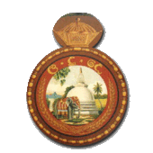

Sri Lanka Railways
|  | |
| Government-owned corporation | |
| Industry | Rail transport |
| Founded | 1858 |
| Headquarters | Colombo, Sri Lanka |
|
Key people
|
Mr. B. A. P. Ariyaratne, General Manager (act.) |
| Revenue | LKR 4,200,000,000[1] |
| - LKR 7,500,000,000 | |
|
Number of employees
|
approx. 14,400[2] |
| Slogan | Vision: "To be the most sought after land transport provider in Sri Lanka providing unsurpassed value to our stake holders." |
| Website | www.railway.gov.lk |
{kind=link}
| Reporting mark | SLR |
|---|---|
| Locale | Sri Lanka |
| Dates of operation | 1864–Present |
| Track gauge | 1,676 mm (5 ft 6 in) |
| Electrification | 0 km |
| Headquarters | Colombo, Sri Lanka |
| Website | www |
Sri Lanka Railway Department, branded "Sri Lanka Railways" (SLR), is Sri Lanka's railway owner and primary operator. It is a key department of the Sri Lankan Government, under the Ministry of Transport, with a history that begins in 1858. Sri Lanka Railways (formerly CGR – Ceylon Government Railway) operates the nation's rail network linking Colombo - the commercial capital of Sri Lanka - and many population centres and tourist destinations.
Contents
[hide]Overview[edit]
{kind=link}
Presently the Sri Lankan Railway network consists of 1,508 kilometres with 5 ft 6 in (1,676 mm) broad gauge. The narrow gauge lines were 2 ft 6 in (762 mm). The railway contains some of the most magnificent scenic rail routes in the world. Particularly the Main Line winding through both natural beauties such as waterfalls, natural forest mountains, misty peaks and precipices, as well as man made festoons such as tea estates, pine forests and engineering feats including bridges and peak level stations.
History[edit]
Beginnings[edit]
{kind=link}
The railway network was introduced by the British colonial government in 1864. The main reason for building a railway system in Ceylon was to transport tea and coffee from the hill country to Colombo. Initially the service began with the Main Line of 54 kilometres connecting Colombo and Ambepussa.[3] Sir Guilford Lindsey Molesworth became the first chief engineer and later Director General of the government railways. During this time, many Ceylonese people referred to the trains as the Anguru Kaka Wathura Bibi Duwana Yakada Yaka[4] (the coal-eating, water-drinking, sprinting, metal devils).
Extensions were made to the main line in 1867, 1874, 1885, 1894 and 1924, extending its service to Kandy, Nawalapitiya, Nanu Oya, Bandarawela and Badulla, respectively.[5] Many other railway lines were added to Ceylon Railway System within the first century of its life, such as a line to Matale in 1880, Coast Railway Line in 1895, Northern Line in 1905, Mannar Line in 1914, Kelani Valley in 1919, Puttalam Line in 1926, and Railway Line to Batticaloa and Trincomalee in 1928. For more than 80 years after that,[6] no more major extensions were added to the Ceylon railway network as the British left the country on its independence.
Golden era[edit]
Though the British established the railway system, the golden era of Ceylon Railways was during the period 1955–1970 under the management of B.D Rampala, the most respected chief mechanical engineer and later General Manager of CGR.[4] Rampala worked to maintain punctuality and improve comfort. He led the upgrading of major railway stations outside Colombo, and the rebuilding of the track in the Eastern Province to facilitate heavier and faster trains. He launched express trains, many of which were given iconic names. In effect, he ensured that Ceylon's railway system was up-to-date in technology and offering greater comfort to its passengers.[4][7]
Till 1953, Ceylon's railways operated steam locomotives. In the golden era, it enhanced its service by changing to diesel locomotives, under the leadership of Rampala.[7] Various types of diesel locomotives were added to the service.
Decline[edit]
In the late 20th century, the railway started to decline. For three decades, it suffered from neglect and poor treatment.[8] By this time, the Sri Lankan economy was focused more on industries than plantation agriculture. The road network also grew. With the growth of lorries and highways, which were a faster means of transporting goods, the amount of goods transported by the railways declined. The railways became an enterprise generating a heavy loss.
During this time, SLR failed to keep up with technological innovations seen in other railways abroad. Issues of travel time, reliability, and comfort caused it to lose much of its market share of passenger transport. By 2011, its share of the market was only seven percent.[4]
Rebirth[edit]
{kind=link}
In the early 2010s, the government launched a 10-year Railway Development Strategy to bring the railway back to satisfactory condition.[4][8] It started by ordering new diesel-multiple units (DMU) to replace the current trains.[8][9] In 2010-2012, the railway upgraded the track on the Southern line, which was damaged in the 2004 tsunami. The track was upgraded to handle trains at 100 km/h, allowing for shorter journey times.[10] It is also currently rebuilding the Northern line, which suffered from war for almost three decades. As of 2015, the line is fully restored to Jaffna and Kankesanturai as was before the war.[11] The railway is also extending the Southern line from Matara to Kataragama, in order to serve the growing city of Hambantota.[6] As of 2015, construction is in progress on the track up to Beliaththa, but there are heavy delays.
In 2011, Sri Lanka Railways began partnerships with ExpoRail and Rajadhani Express to launch premium services on major routes.[12][13]
Services[edit]
Sri Lanka Railways operates both intercity services, connecting major population centres, and commuter rail, serving Colombo commuter traffic.[14] The railways also transport freight.
Most inter-city services are provided in different classes of varying comfort:[15]
- 1st class sleeper carries sleeping-berths and are provided on a few overnight trains.
- 1st class observation car is available on certain daytime trains, mostly on the Main Line, and is very popular among tourists. The observation car provides wide views of the scenery and is normally at the rear of the train but occasionally behind the locomotive.
- 1st class air-conditioned[15] seats are available on occasional inter-city express trains between Colombo and Vavunia and Colombo and Batticaloa. Now it also available in Udarata manike and Podi manike trains on main line.
- 2nd class seats are provided on all inter-city trains and are available as either unreserved seats or reserved seats, where a passenger is allocated a specific seat.
- 3rd class seats are available on most trains. This class can get very crowded and carries only basic facilities.
- Rajadhani Express and Expo-rail are two privately run services newly introduced to many inter-city trains. They are luxury, air-conditioned compartments on Sri Lanka Railways trains, functioning privately in partnership with SLR. The prices of the tickets are typically higher than SLR's own first class tickets. On board, one is provided with tea, snacks, and meals.
Commuter trains serve the busiest portions of the railways, ferrying commuters within Colombo and its suburbs.[16] Most commuter trains are operated with diesel-multiple units, and lack the three-class configuration seen in the inter-city services.[14] Commuter trains help alleviate rush hour congestion on city roads, but can be very crowded.
Electrification of the commuter rail network has been proposed, to improve energy efficiency and sustainability.[17]
Hierarchy of trains[edit]
| Rank | Train | Description |
|---|---|---|
| 1 | Air conditioned luxury trains | These are air-conditioned trains linking major cities. Consist only of air conditioned carriages.[citation needed] |
| 2 | Intercity express trains | They are among the fastest trains, There are only a few stops. 1st, 2nd & 3rd class seats are available at a higher charge.[citation needed] |
| 3 | Night mail trains | Night time express trains travelling away from Colombo[citation needed]. |
| 4 | Express trains | Have more stops than an intercity express.[citation needed] Links Colombo and major transport hubs. |
| 5 | Suburban trains | Stops every station on its route. Services are provided to certain extents from Colombo.[citation needed] |
Routes and major services[edit]
{kind=link}
SLR divides the network into three operating regions, based in Colombo Maradana, Nawalapitya, and Anuradhapura.[18] Nine lines make up the railway network. Popular services were given iconic names, in the 1950s.
| Route | Major Services | |
|---|---|---|
| Main Line | Main Line Colombo Fort to Nawalapitya, Nanu Oya, and Badulla |
Udarata Menike, Podi Menike, Tikiri Menike, Senkadagala Menike |
| Matale Line | Matale Line Peradeniya Junction to Kandy and Matale |
Senkadagala Menike |
| Route | Major Services | |
|---|---|---|
| Northern Line | Northern Line Polgahawela to Kurunegala, Anuradhapura, Jaffna and Kankesanthurai |
Yal Devi, Rajarata Rajina |
| Mannar Line | Mannar Line Medawachchi junction to Mannar and Talaimannar |
|
| Batticaloa Line | Batticaloa Line Maho Junction Railway Station to Polonnaruwa and Batticaloa |
Udaya Devi, Meena Gaya |
| Trincomalee Line | Trincomalee Line Gal Oya Junction to Kantale and Trincomalee |
| Route | Major Services | |
|---|---|---|
| Coastal Line | Coastal Line Colombo Fort to Galle and Matara; under-construction to Hambantota and Kataragama |
Ruhunu Kumari, Samudra Devi, Galu Kumari, Sagarika, Rajarata Rajina |
| Kelani Valley Line | Kelani Valley Line Colombo Maradana to Avissawella |
|
| Puttalam Line | Puttalam Line Ragama to Puttalam |
Muthu Kumari, Bangadeniya |
Locomotives and Rolling Stock[edit]
{kind=link}
Locomotives of Sri Lanka Railways consist mostly of diesel locomotives. Steam locomotives were used on regular services until the 1950s, but now only run on heritage trains, such as the Viceroy Special.[7][19]
The first locomotives pulled trains in the 1860s on the original segment of the Main Line, on 54 kilometres connecting Colombo and Ambepussa.[3] In 1953, Sri Lanka Railways enhanced its service by conversion to diesel locomotives.[7] Since then, various types of diesel locomotives were added to the service.
As of August 2011, Sri Lanka does not have commercially operational electric locomotives or train sets. Electrification has been proposed, to improve energy efficiency and sustainability.[17]
Most passenger coaches are either Romanian-built ASTRA passenger coaches[20][21] or Chinese-built CSR coaches. On most lines, the service is currently being upgraded, as new long-haul diesel multiple units from CSR and India's RITES Ltd are being imported.[8][9][22]
Issues[edit]
Finances[edit]
Like several state-owned enterprises in the country, Sri Lanka Railways regularly incurres large financial losses.[23] It has not made a profit since 1943. As of May 2007, the railway makes a revenue of about three billion rupees, but requires a state subsidy of seven billion rupees to balance its budget.[24]
It faces the challenge of addressing high operational and infrastructure costs, dealing with a Victorian-era network. The State has been the employer of first resort, which has caused the railway to be overstaffed. Priority needs to be attached to reallocating labour from less to more productive employment activities.[25]
The railway also faces the need to rationalise underpriced fares.[26] In April 2012, the Central Bank urged state-owed enterprises, including SLR, to adopt market pricing to reduce reliance on the government budget. It called for improved financial management and pricing to make the operation more financially viable.[1]
Infrastructure limitations[edit]
{kind=link}
Sri Lanka Railways runs on Victorian-era infrastructure and aging equipment. A substantial amount of expenditure goes to rehabilitating poorly maintained assets, as opposed to regular maintenance. Over the years, rolling stock capacity has declined due to this issue, reducing the quantity and quality that the system is able to provide.[23] Since 2007, the railways have been ordering new rolling stock to meet this shortage.[27]
Transport Integration[edit]
Sri Lanka Railways has not integrated its services with other modes of transport. Unlike transport systems in some other countries, Sri Lanka does not streamline ticketing between road and rail passenger transport or provide thorough documentation for road/rail freight services. Buses do not provide dedicated feeder-bus services to the railways, resulting in Commuter rail and buses acting as isolated systems in relation to each other. This creates a loss in efficiency.[23][28]
Integration of a road-and-rail transport system would reduce traffic and reduce the cost of transportation. It would encourage people to take public transport and could benefit the creation of car-free zones.[28]
Major accidents[edit]
- 18 March 1964 - A train derails at high speed, killing over 60 people near Mirigama.
- 19 January 1985 - LTTE bombed Yal Devi killing 11 civilians.
- 24 July 1996 - LTTE blasted an office train, resulted 70 civilian deaths at Dehiwala.
- 19 August 2001 - A train derails because of high speeds and over crowding, killing 46 between Alawwa and Rambukkana.
- January 2002 - The Intercity Express was heading to Colombo from Kandy derails near Rambukkana causing more than 15 deaths. The accident was due to malfunctioning of the braking system.
- 13 June 2002 – Train derails whilst coming into Alawwa station, killing 14 people.
- 26 December 2004 – 2004-Tsunami rail disaster, At Peraliya, approximately 2685 died in the world's biggest rail disaster as a train is overwhelmed by a Tsunami created by the 2004 Indian Ocean earthquake.
- 26 April 2005 – Polgahawela level crossing collision, a private bus tries to beat another bus and the train at a level crossing in Yangalmodara close to Polgahawela crashed. 37 of commuters died, all on the bus.
{kind=link}
- 17 September 2011 – 2011 Alawwa rail accident, near Alawwa, two trains (intercity express train No 1029 Colombo to Kandy and a Class S11 DMU) collide killing 5 persons and injuring over 30 people.[29]
- 17 May 2012 - Two trains (after one train crashing in to a stopped train) collided between the Wandurawa and Keenawala railway stations in Veyangoda.[30]
- 30 April 2014 - An intercity express train to north and Colombo bound Rajarata Rajina train collided at Pothuhera injuring 68 passengers.[31]
Other than these, a number of accidents have taken place. One major type is elephant accidents, which typically occur in the North-Central area. Other accidents occur at unsecured level crossings with road traffic. There are only 527 secure level crossings, out of 1684 crossings, in Sri Lanka.
In an attempt to prevent collisions, SLR has begun the process of installing a GPS-based, train-protection system. The system would warn drivers of a possible collision with enough time to prevent it.[32][33]
Cultural impact[edit]
Sri Lanka Railways has become an integral part of local popular culture, with references to it in books and TV shows, as well as in everyday life. In the 1960s, a local band called Neville Fernando & Los Caballeros performed a song called "Samuduru Devi" about the passenger train service of the same name.
Some of the most popular trains, such as the Samudra Devi, have become cultural symbols representing commuter travel as a part of suburban life. The railway impacts the way people perceive suburban living.[14]
Tourism[edit]
The scenic rail lines in the hill country are promoted for tourism. The winding route through the hills offers spectacular views that are popular with tourists.
See also[edit]
- Ceylon Railway Engineer Corps
- Rail transport in Sri Lanka
- Railway stations in Sri Lanka
- Transport in Sri Lanka
- Diesel locomotives of Sri Lanka
- Sri Lanka Railway - Major Services
- National railway museum, Kadugannawa
References[edit]
- ^ Jump up to: a b "Rolling Loss". Lanka Business Online. 10 April 2012. Retrieved 12 April 2012.
- Jump up ^ "Overview". Sri Lanka Railways. Retrieved 6 February 2012.
- ^ Jump up to: a b "Ceylon Railway Enthusiasts Circle (CREC)/SLRF". Sri Lanka Railway 145th Anniversary Trip. 2 January 2010.
- ^ Jump up to: a b c d e Farzandh, Jiffry (19 December 2011). "B. D. Rampala - an engineer par excellence". Ceylon Daily News. Retrieved 3 January 2012.
- Jump up ^ "Sunday Observer". Cameos of the past: First train on line to Badulla from Colombo. 19 July 2010.
- ^ Jump up to: a b "Construction of Matara-Kataragama railway line in Southern Sri Lanka". ColomboPage. 6 April 2010.
- ^ Jump up to: a b c d "The Island". Rampala regime in the local Railway History. 19 July 2010.
- ^ Jump up to: a b c d "Dailynews". Power sets to steam long distance travel. 3 September 2010.
- ^ Jump up to: a b "Dailynews". Railway gets new power sets from China. 23 April 2010.
- Jump up ^ Dissanayake, Ridma (11 April 2012). "Southern railway line re-opens today". Ceylon Daily News. Retrieved 11 September 2012.
- Jump up ^ "Lanka Business Online". Sri Lanka gives northern rail rebuilding deal to India’s IRCON. 18 August 2010.
- Jump up ^ "Luxury Rail". Lanka Business Today. 26 February 2012. Retrieved 28 February 2012.
- Jump up ^ "Sri Lankan railway introduces luxury class Services on Colombo -Kandy rails". News.lk. 7 November 2011. Retrieved 28 February 2012.
- ^ Jump up to: a b c "The Island". Samudra Devi in a Tangle of Love!. 12 July 2009.
- ^ Jump up to: a b "A beginner's guide to Train travel in Sri Lanka ..."
- Jump up ^ "The Island". Railway Electrification: Let us Start, at least now. 27 March 2010.
- ^ Jump up to: a b "Daily News". IESL proposes railway electrification project. 25 December 2010.
- Jump up ^ "Our Network". Sri Lanka Railways. Retrieved 9 March 2012.
- Jump up ^ http://www.infolanka.com/org/mrail/locos1.html
- Jump up ^ "Daily News". Railway to buy more locos, carriages. 12 May 2007.
- Jump up ^ http://www.infolanka.com/org/mrail/slrails.html The Railways of Sri Lanka (Ceylon)
- Jump up ^ "ColomboPage". India hands over new power sets for Sri Lanka's Southern Railway Line. 11 March 2011.
- ^ Jump up to: a b c http://www.adb.org/Documents/Evaluation/CAPES/SRI/CAPE-SRI-Transport-Sector.pdf ADB Sector Paper. Sri Lanka Country Assistance Program Evaluation: Transport Sector. August 2007
- Jump up ^ "Lanka Business Online". Rolling Stock: Sri Lanka in 60 mln dlr train deal with China. 11 May 2007.
- Jump up ^ "Daily FT". A new paradigm for providing economic services. 3 August 2011.
- Jump up ^ "Asian Tribune". Sri Lanka’s Treasury cautions loss making state entities. 1 June 2011.
- Jump up ^ "China - Sri Lanka's top lender in 2009". China - Sri Lanka’s top lender in 2009. 18 April 2010.
- ^ Jump up to: a b Mapatunage, Prasad Sachintha (23 September 2012). "Sri Lanka can easily enforce a car-free day". The Sunday Times. Retrieved 26 September 2012.
- Jump up ^ "Death toll in Alawwa train accident rises to 5". 18 September 2011.
- Jump up ^ "News First". Trains collide in Veyangoda. 18 May 2012.
- Jump up ^ "68 injured in train accident". Daily Mirror. Retrieved 2 May 2014.
- Jump up ^ "Daily Mirror". SLR to equip fleet with modern safety devices. 21 November 2011.
- Jump up ^ "ColomboPage". Sri Lanka Railways installs new equipment to prevent accidents. 26 October 2011.
External links[edit]
| Wikimedia Commons has media related to Sri Lanka Railways. |
- Sri Lanka Railways Official Site
- Ministry of Transport
- Sri Lanka Railways Timetables
- Sri Lanka Railway mainland routes timetables from "Seat61" (this is not updated)
- Locomotives of the SRI LANKA RAILWAY (M2, Jaffna Rail pictures)
- Sri Lankan Diesel Locomotives Page
- Kelani Valley Railway-කැලණිවැලි දුම්රිය fb page
- BRUSH BAGNALL SRI LANKA Restoration web site
- Sri Lanka Railways Photo Collection
- Two Unforgettable Railway Accidents
- ෴අඟුරු නොකා වතුර නොබී කොළඹ දුවන යකඩ යකා෴
- Sri Lanka Railway Schedule - Mobile Edition
- An essay about taking the train from Colombo to Kandy
- Locomotives Of Sri Lanka
- Winchester, Clarence, ed. (1936), "Rail transport in Ceylon", Railway Wonders of the World, pp. 1100–1105 illustrated description of the railways of Ceylon in the 1930s